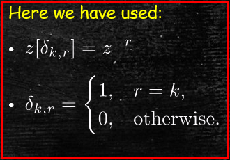
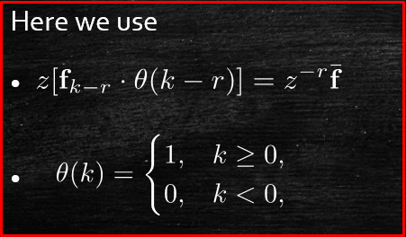

Jonathan Crofts
Nottingham Trent University
Recall that the homogeneous system of difference equations
\[ \mathbf{x}_{k+1} = A\mathbf{x}_k:\quad \mathbf{x}_0=\mathbf{c} \]Has solution
\[ \color{red}{\boxed{\color{white}{ \mathbf{x}_k = A^k\mathbf{x}_0 = A^k\mathbf{c} }}} \]This solution can be obtained inductively as follows:
\[ \mathbf{x}_1=A\mathbf{x}_0,\quad \mathbf{x}_2=A\mathbf{x}_1=A^2\mathbf{x}_0, \quad \text{etc.} \]Similarly, for an inhomogeneous system of the form
\[ \mathbf{x}_{k+1} = A\mathbf{x}_k + \mathbf{f}_k:\quad \mathbf{x}_0=\mathbf{c} \]We can proceed inductively as follows
\[ \begin{align*} k=0\implies \mathbf{x}_1&=A\mathbf{x}_0+\mathbf{f}_0\\ k=1\implies \mathbf{x}_2&=A\mathbf{x}_1+\mathbf{f}_1\\ &=A^2\mathbf{x}_0+A\mathbf{f}_0+\mathbf{f}_1\\ k=2\implies \mathbf{x}_3&=A\mathbf{x}_2+\mathbf{f}_2\\ &=A(A^2\mathbf{x}_0+A\mathbf{f}_0+\mathbf{f}_1)+\mathbf{f}_2\\ &=A^3\mathbf{x}_0+A^2\mathbf{f}_0+A\mathbf{f}_1+\mathbf{f}_2\\ &\vdots\\ \mathbf{x}_k&=A^k\mathbf{x}_0+A^{k-1}\mathbf{f}_0+A^{k-2}\mathbf{f}_1+\cdots+A\mathbf{f}_{k-2}+\mathbf{f}_{k-1} \end{align*} \]Thus giving us the solution
\[ \color{red}{\boxed{\color{white}{ \begin{align*} \mathbf{x}_k&=A^k\mathbf{x}_0+\sum_{r=0}^{k-1}A^r\mathbf{f}_{k-1-r}\\ &=A^k\mathbf{x}_0+\sum_{r=0}^{k-1}A^{{k-1-r}}\mathbf{f}_r \end{align*} }}} \]z-transforms may be considered a 'discrete' version of the Laplace transform
Applying z-transforms to the equation
\[ \mathbf{x}_{k+1} = A\mathbf{x}_k+\mathbf{f}_k:\quad \mathbf{x}_0=\mathbf{c} \]We obtain
\[ z\bar{\mathbf{x}}-z\mathbf{x}_0 = A\bar{\mathbf{x}}+\bar{\mathbf{f}} \]Here the bars denotes z-transforms i.e. $\displaystyle \bar{\mathbf{x}}=z[\mathbf{x}]$ and $\displaystyle \bar{\mathbf{f}}=z[\mathbf{f}]$
And we have used the fact that
\[ z\left[\mathbf{x}_{k+1}\right] = z\bar{\mathbf{x}}-z\mathbf{x}_0 \quad\text{and}\quad z\left[A\mathbf{x}\right] = Az\left[\mathbf{x}\right] = A\bar{\mathbf{x}} \]Rearranging the above gives
\[ \begin{align*} \bar{\mathbf{x}} &=\left(zI_n-A\right)^{-1}\left(z\mathbf{x}_0+\bar{\mathbf{f}}\right)\\ &=\color{red}{\boxed{\color{white}{ \left(zI_n-A\right)^{-1}z\mathbf{x}_0+\left(zI_n-A\right)^{-1}\bar{\mathbf{f}}}}} \end{align*} \]Let us look at the two terms on the right independently
Starting with the first term:
\[ \begin{align*} \left(zI_n-A\right)^{-1}&=\frac{1}{z}\left(I_n-\frac{1}{z}A\right)^{-1}\\ &=\frac{1}{z}\sum_{r=0}^\infty \left(\frac{1}{z}A\right)^r \end{align*} \]Therefore
\[ \left(zI_n-A\right)^{-1}z\mathbf{x}_0 = \sum_{r=0}^\infty\frac{1}{z^r}A^r\mathbf{x}_0 \]Whose inverse transform is
\[ \sum_{r=0}^\infty \delta_{k,r}A^r\mathbf{x}_0 = \color{#00FF00}{\boxed{\color{white}{A^k\mathbf{x}_0}}} \] The second term can be written
\[ \begin{align*} \left(zI_n-A\right)^{-1}\bar{\mathbf{f}}&=\sum_{r=0}^\infty\frac{1}{z^{r+1}}A^r\bar{\mathbf{f}}\\ &=\sum_{r=0}^\infty A^r\frac{1}{z^{r+1}}\bar{\mathbf{f}} \end{align*} \]Whose inverse transform is
\[ \sum_{r=0}^\infty A^r\mathbf{f}_{k-r-1}\theta\left(k-r-1\right)=\color{#00FF00}{\boxed{\color{white}{\sum_{r=0}^{k-1}A^r\mathbf{f}_{k-r-1}}}} \] Putting this all together we obtain our earlier result
We can take inverse z-transforms of the equation
\[ \bar{\mathbf{x}} = \left(zI_n-A\right)^{-1}z\mathbf{x}_0+\left(zI_n-A\right)^{-1}\bar{\mathbf{f}} \]To get
\[ \begin{align*} z^{-1}\left[\bar{\mathbf{x}}\right] &= z^{-1}\left[\left(zI_n-A\right)^{-1}z\mathbf{x}_0+\left(zI_n-A\right)^{-1}\bar{\mathbf{f}}\right]\\ \mathbf{x}_k &= z^{-1}\left[\left(zI_n-A\right)^{-1}z\right]\mathbf{x}_0+z^{-1}\left[\left(zI_n-A\right)^{-1}\bar{\mathbf{f}}\right]\\ &=\color{red}{\boxed{\color{white}{A^k\mathbf{x}_0+\sum_{r=0}^{k-1}A^r\mathbf{f}_{k-r-1}}}} \end{align*} \]As before
Consider
\[ A = \begin{bmatrix}2&1&1\\-1&0&-1\\3&5&4\end{bmatrix}=HJH^{-1} \]Where
\[ H=\begin{bmatrix}1&-1&1\\0&1&-1\\-1&-1&2\end{bmatrix}\quad H^{-1}=\begin{bmatrix}1&1&0\\1&3&1\\1&2&1\end{bmatrix}\quad J=\begin{bmatrix}1&&\\&2&\\&&3\end{bmatrix} \]Solve
\[ \mathbf{x}_{k+1}=A\mathbf{x}_k + \mathbf{f}_k:\quad \mathbf{x}_0=\mathbf{c} \]With
\[ \mathbf{f}=\begin{bmatrix}1&0&0\end{bmatrix}^T\quad\text{and}\quad\mathbf{c}=\begin{bmatrix}0&-1&2\end{bmatrix}^T \]We need to start by computing $A^k$:
\[ \begin{align*} A^k&=HJ^kH^{-1}\\ &= \begin{bmatrix}1&-1&1\\0&1&-1\\-1&-1&2\end{bmatrix}\begin{bmatrix}1&&\\&2^k&\\&&3^k\end{bmatrix}\begin{bmatrix}1&1&0\\1&3&1\\1&2&1\end{bmatrix}\\ &= \begin{bmatrix}1&-1&1\\0&1&-1\\-1&-1&2\end{bmatrix}\begin{bmatrix}1&1&0\\2^k&3\cdot 2^k&2^k\\3^k&2\cdot 3^k&3^k\end{bmatrix} = \begin{bmatrix}1-2^k+3^k&1-3\cdot 2^k+2\cdot 3^k&3^k-2^k\\2^k-3^k&3\cdot 2^k-2\cdot 3^k&2^k-3^k\\ 2\cdot 3^k-2^k-1&4\cdot 3^k-3\cdot 2^k-1&2\cdot 3^k-2^k\end{bmatrix} \end{align*} \]Thus
\[ A^k\mathbf{x}_0 = \begin{bmatrix}1-2^k+3^k&1-3\cdot 2^k+2\cdot 3^k&3^k-2^k\\2^k-3^k&3\cdot 2^k-2\cdot 3^k&2^k-3^k\\ 2\cdot 3^k-2^k-1&4\cdot 3^k-3\cdot 2^k-1&2\cdot 3^k-2^k\end{bmatrix}\begin{bmatrix}0\\-1\\2\end{bmatrix}=\color{red}{\boxed{\color{white}{ \begin{bmatrix}2^k-1\\-2^k\\1+2^k\end{bmatrix}}}} \]Now
\[ \begin{align*} \sum_{r=0}^{k-1} A^r\mathbf{f}_{k-r-1} &= \sum_{r=0}^{k-1} \begin{bmatrix}1-2^r+3^r&1-3\cdot 2^r+2\cdot 3^r&3^r-2^r\\2^r-3^r&3\cdot 2^r-2\cdot 3^r&2^r-3^r\\ 2\cdot 3^r-2^r-1&4\cdot 3^r-3\cdot 2^r-1&2\cdot 3^r-2^r\end{bmatrix}\begin{bmatrix}1\\0\\0\end{bmatrix}\\ &=\sum_{r=0}^{k-1} \begin{bmatrix}1-2^r+3^r\\2^r-3^r\\2\cdot 3^r-2^r-1\end{bmatrix}\\ &=\begin{bmatrix}\sum 1-\sum2^r+\sum3^r\\\sum 2^r-\sum 3^r\\2\sum 3^r-\sum 2^r-\sum 1\end{bmatrix} = \color{red}{\boxed{\color{white}{\begin{bmatrix}k-(2^k-1)+\frac{1}{2}(3^k-1)\\ 2^k-1-\frac{1}{2}(3^k-1)\\3^k-1-(2^k-1)-k\end{bmatrix}}}} \end{align*} \]The final result follows since
\[ \color{#00FF00}{\boxed{\color{white}{ \sum_{r=0}^{k-1}1=k,\quad \sum_{r=0}^{k-1}2^r=\frac{1-2^k}{1-2} = 2^k-1,\quad\text{and}\quad \sum_{r=0}^{k-1}3^r=\frac{1-3^k}{1-3}=\frac{1}{2}(3^k-1) }}} \]We are now in a position to put this all together
\[ \begin{align*} \mathbf{x}_k &=A^k\mathbf{x}_0+\sum_{r=0}^{k-1}A^r\mathbf{f}_{k-r-1}\\ &=\begin{bmatrix}2^k-1\\-2^k\\1+2^k\end{bmatrix}+\begin{bmatrix}\frac{1}{2}+k-2^k+\frac{1}{2}3^k\\ 2^k-\frac{1}{2}-\frac{1}{2}3^k\\3^k-2^k-k\end{bmatrix}\\ &=\color{#00FF00}{\boxed{\color{white}{ \begin{bmatrix}-\frac{1}{2}+k+\frac{1}{2}3^k\\ -\frac{1}{2}-\frac{1}{2}3^k\\1-k+3^k\end{bmatrix}}}} \end{align*} \]